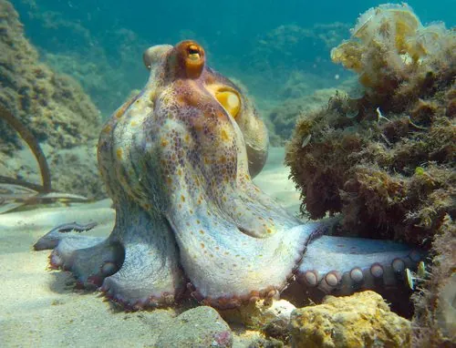

软体动物 · 动物界
真蛸 Octopus vulgaris

分布最广的章鱼之一，八条腕足布满吸盘，皮肤能随环境变色，会用贝壳和椰壳当临时庇护所，智力在无脊椎动物中名列前茅。
- 分类
- 门软体动物门纲头足纲目八腕目科蛸科属蛸属
- 栖息环境
- 热带至温带沿岸的岩礁、沙泥底质和洞穴，水深 0–200 m
- 地理分布
- 全球热带至温带沿海，包括地中海、大西洋东岸、印度洋和西太平洋，中国东海、南海有分布
- 保护级别
- 暂无评估；中国未列入国家重点保护野生动物名录（重要渔业资源）
物种志
真蛸的身体分为头部和腕部，外套膜呈卵圆形，体内没有内壳。八条腕足长而灵活，每条腕上有两列吸盘，吸盘总数可达上千个；口位于八腕中央，生有坚硬的角质颚，像鹦鹉的喙。它的皮肤上密布色素细胞和乳突，能在不到一秒内改变颜色和纹理，模拟岩石、沙地和珊瑚的质感。腕展可达 1 m 以上，外套膜长约 15–25 cm，体重通常 1–5 kg。
真蛸栖息于热带至温带沿岸水深 0–200 m 的岩礁、沙泥底和洞穴中，白天藏在洞里，常用石块、贝壳堵住洞口，夜间外出捕食蟹类、双壳类、虾和小鱼。它用腕足上的吸盘抓住猎物，再用喙咬开甲壳，注入消化液后吸食；遇到危险时会喷墨、变色或断腕逃生，断掉的腕足还能再生。繁殖时雄鱼用特化的交接腕把精荚送入雌鱼外套腔，雌鱼产下 10 万–50 万枚卵，悬垂在洞顶守护约 2–3 个月，期间不进食，孵化后随即死亡。真蛸是全球重要的渔业资源，目前没有IUCN 的正式评估，中国也未将其列入国家重点保护野生动物名录。
形态与习性
- 食性捕食蟹、虾、双壳类和鱼类，用喙咬开甲壳
- 体长腕展可达 1 m 以上，外套膜长约 15–25 cm
- 体重通常 1–5 kg，最大可达 10 kg 左右
- 寿命约 1–2 年
- 繁殖雌鱼产卵 10 万–50 万枚，护卵 2–3 个月后死亡
- 防御喷墨、变色伪装，腕足断后可再生
趣味知识
- 真蛸有三颗心脏，两颗给鳃供血，一颗给全身供血，血液因含血蓝蛋白而呈蓝色。
- 它的皮肤能在不到一秒内改变颜色和纹理，融入岩石或沙地。
- 章鱼是少数会使用工具的动物，会搬来椰子壳或贝壳把自己藏进去。